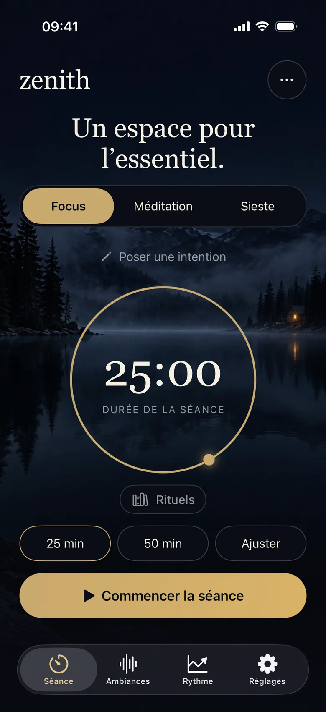
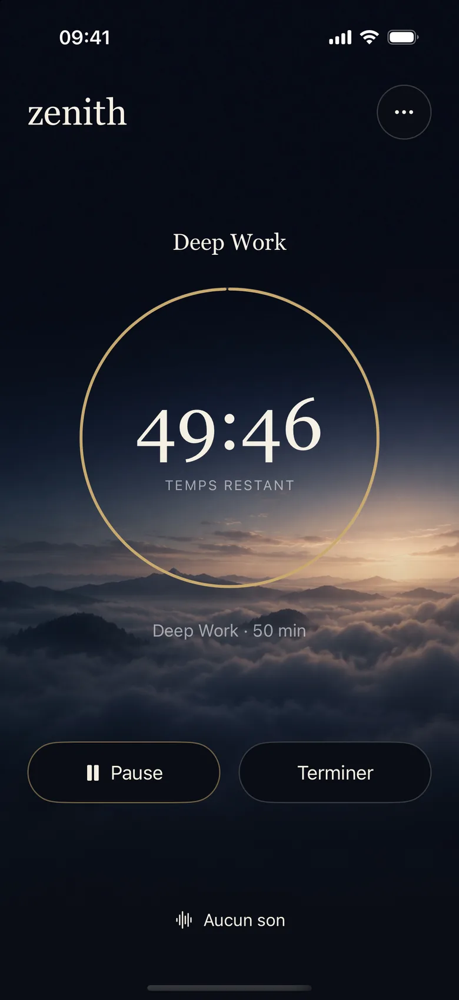
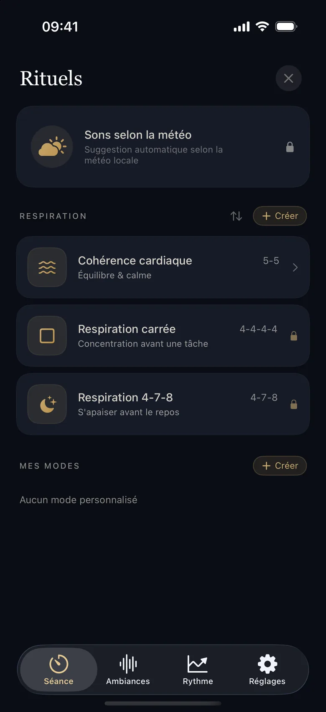
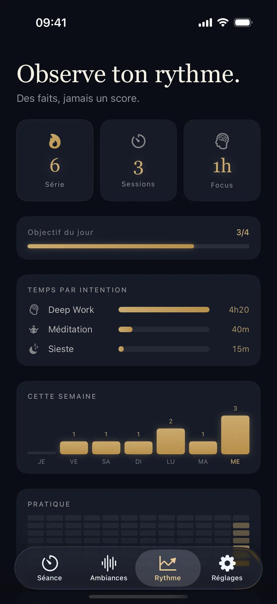
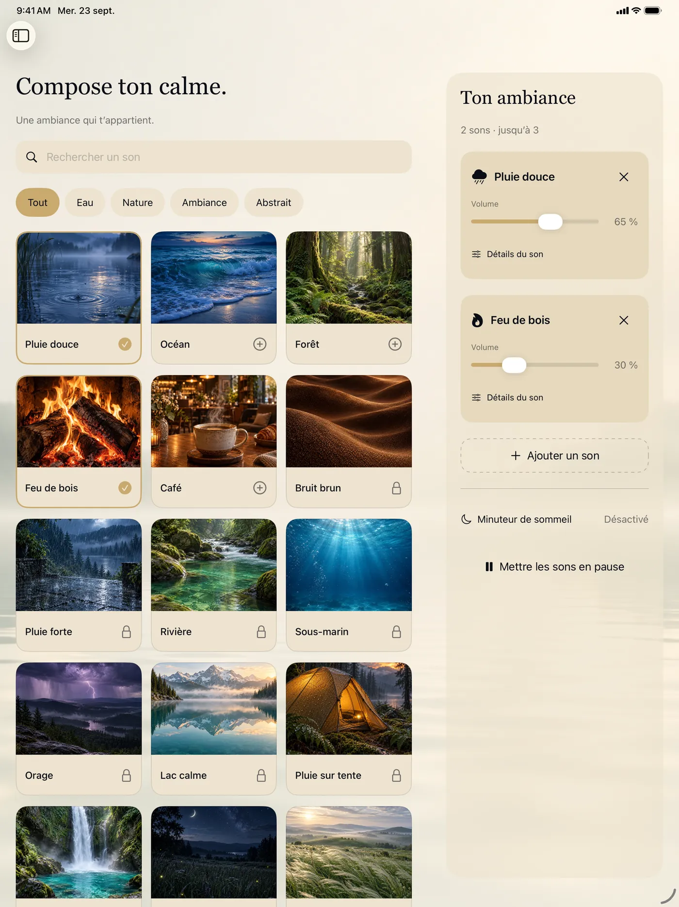
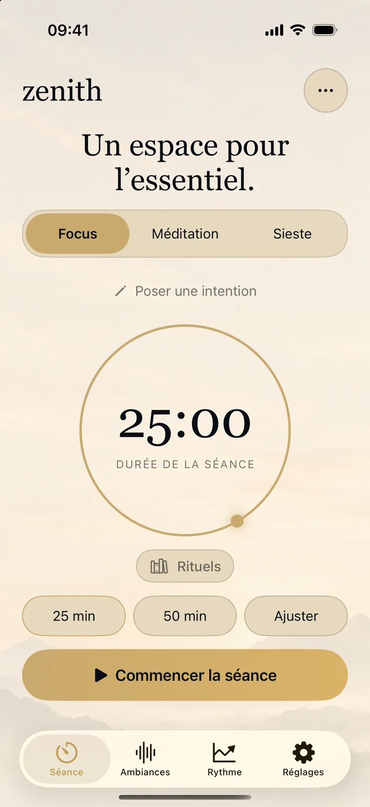
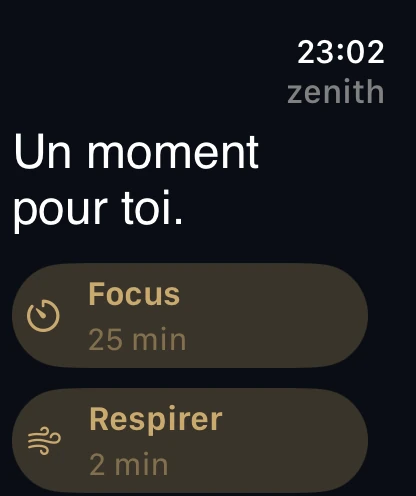
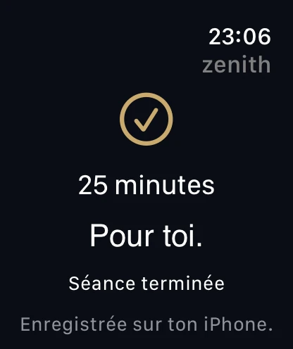

01 La séance
Choisis. Pose une intention. Commence.
Focus, Méditation ou Sieste : tu règles la durée, tu poses une intention si tu le souhaites, et c’est parti. 25 minutes, 50 minutes ou sur mesure.
Zenith 2.0
Se concentrer, respirer, faire une pause. Sur iPhone, sur iPad, et au poignet.

Un minuteur. Des sons que tu choisis. Un souffle guidé. Juste ce qu’il faut pour commencer.
01 La séance
Focus, Méditation ou Sieste : tu règles la durée, tu poses une intention si tu le souhaites, et c’est parti. 25 minutes, 50 minutes ou sur mesure.
02 En séance
Un anneau doré, le temps qui reste, deux gestes : Pause ou Terminer. Tes ambiances sonores restent à portée, en bas de l’écran.

03 Rituels
Cohérence cardiaque, respiration carrée, 4‑7‑8 : des techniques guidées, que tu peux aussi créer et réordonner. La cohérence cardiaque est gratuite ; les autres arrivent avec l’accès complet.

04 Rythme
Ta série, tes sessions, tes minutes de focus, ton objectif du jour, ton calendrier de pratique : tout vit dans son propre onglet.
Chiffres de démonstration.

Trois façons de prendre du temps
Un minuteur Pomodoro pour travailler par cycles, avec une durée et une intention à ta main.
Un temps calme, avec l’ambiance sonore de ton choix.
Une durée choisie, une ambiance, et un réveil progressif au son d’un bol tibétain.
Ambiances
La pluie sur une tente, un feu de bois, un piano au loin. Chaque son a sa propre illustration ; mélange-en jusqu’à trois et règle le volume de chacun. Sur iPad, la bibliothèque et ton mix se partagent l’écran.
5 sons sont gratuits, un à la fois. L’accès complet débloque les 26 sons et le mixage.

Jour et nuit
Chaque écran a été repensé, avec un décor qui change entre jour et nuit. Glisse pour comparer.



Apple Watch
Lance un Focus ou une respiration depuis ta montre, même sans ton iPhone à proximité. Une fois la séance terminée, elle est enregistrée sur ton iPhone.
Une app, pas un abonnement
Le minuteur, le suivi et cinq sons pour commencer, gratuitement. Un achat unique dans l’app débloque l’accès complet : pas d’abonnement.
Ton espace reste le tien
Pas de compte, pas de publicité, aucun suivi. Tes statistiques et tes réglages restent sur tes appareils, et les sons comme le minuteur fonctionnent hors ligne.
La météo et l’écriture dans Apple Santé sont facultatives. La sauvegarde iCloud, dans ton propre compte, se désactive à tout moment.
Lire la politique de confidentialitéIls en parlent
Simple, efficace et agréable à utiliser. Le minuteur m’aide vraiment à rester concentré, et les sons d’ambiance sont un petit plus sympa. J’aime beaucoup !
Math6201
Vraiment agréable à utiliser, simple et bien pensée. J’aime particulièrement le fait de pouvoir mélanger plusieurs sons d’ambiance pour créer exactement l’atmosphère qu’on veut. Le minuteur Pomodoro est aussi très pratique pour rester concentré sans voir le temps passer. L’interface est plutôt sobre et élégante, sans fonctionnalités inutiles. Gros plus : elle fonctionne hors ligne. Une très bonne découverte que je recommande pour travailler, étudier ou simplement se détendre.
Maniie_21
Application top, au design épuré et élégant. Usage quotidien : meilleure concentration au travail et endormissement plus facile le soir.
Mesh72_
J’adore vraiment l’ambiance de Zenith Focus. Les sons et l’atmosphère générale rendent beaucoup plus facile de s’installer et de se concentrer sur ce que je fais. Cela crée une sensation vraiment calme et chaleureuse, sans distraire, et je me surprends à vouloir le garder allumé pendant que je travaille. L’app est aussi vraiment simple à utiliser, ce que j’apprécie. C’est devenu l’un de ces petits plaisirs que j’aime avoir en arrière-plan quand je dois me mettre dans un état d’esprit concentré. Je le recommande vraiment !
Jgatz95 · Traduit de l’anglais
L’application fonctionne bien, plusieurs options qui permet de personnaliser l’expérience !
Kaili FR
Avis publiés sur l’App Store par des utilisateurs de Zenith Focus.
Zenith 2.0
Télécharge Zenith sur l’App Store, pour iPhone, iPad et Apple Watch.